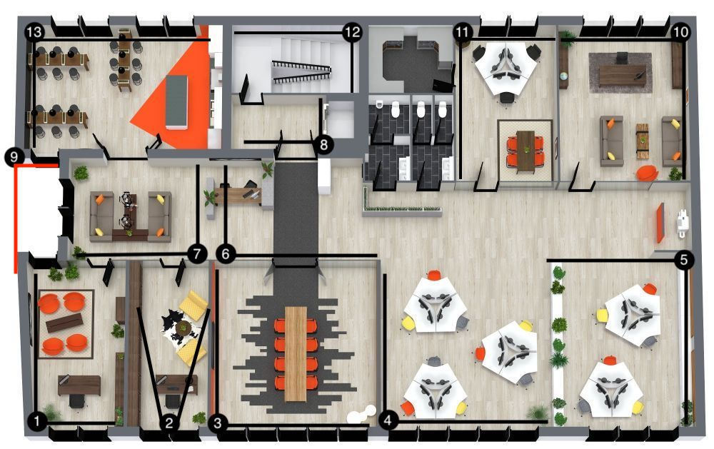

Este proyecto muestra la distribución estratégica de cámaras Dahua en la oficina para garantizar
una cobertura completa de las zonas críticas, incluyendo accesos, pasillos y áreas de trabajo.

Detalles del proyecto
Cámaras IP Dahua con resolución Full HD.
Instalación mediante switch PoE para alimentación y datos.
Cobertura de accesos principales y zonas de tránsito.
Grabación continua en NVR con disco duro dedicado.
Acceso remoto seguro mediante aplicación móvil.
Lineas del plano marcan la cantidad de espacio que graban.